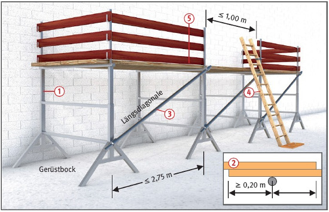
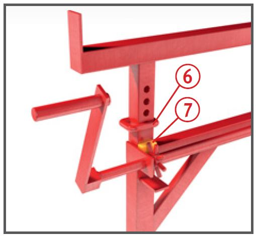

- bei einem Pfostenabstand bis 2,00 m Gerüstbretter mit Mindestquerschnitt 15 x 3 cm,
- bei einem Pfostenabstand bis 3,00 m Gerüstbretter mit Mindestquerschnitt 20 x 4 cm oder Stahlrohre Ø = 48,3 x 3,2 mm bzw. Aluminiumrohre Ø 48,3 x 4 mm.
Bockgerüste |

| 1 Lastklassen der Arbeitsgerüste | |
| Lastklasse | Gleichmäßig verteilte Last kN/m2 |
| 1 | 0,75 |
| 2 | 1,50 |
| 3 | 2,00 |
| 4 | 3,00 |
| 5 | 4,50 |
| 6 | 6,00 |
| 2 Mindestabmessungen von Gerüstbrettern/-bohlen bei Arbeitsgerüsten (S10 nach DIN 4074-1) | ||||||
| Lastklasse | Brett- oder Bohlenbreite | Brett- oder Bohlendicke cm | ||||
| 3,0 | 3,5 | 4,0 | 4,5 | 5,0 | ||
| cm | zulässige Stützweite in m | |||||
| 1, 2, 3 | 20 24 und 28 |
1,25 1,25 |
1,50 1,75 |
1,75 2,25 |
2,25 2,50 |
2,50 2,75 |
| 4 | 20 24 und 28 |
1,25 1,25 |
1,50 1,75 |
1,75 2,00 |
2,25 2,25 |
2,50 2,50 |
| 5 | 20, 24, 28 | 1,25 | 1,25 | 1,50 | 1,75 | 2,00 |
| 6 | 20, 24, 28 | 1,00 | 1,25 | 1,25 | 1,50 | 1,75 |
| 3 Erforderliche Tragfähigkeit in kg1) der Gerüstböcke in Abhängigkeit von der Lastklasse, der Belagbreite und dem Abstand der Gerüstböcke Gerüstbohlen als Mehrfeldträger | ||||||||||
| Lastklasse | Belagbreite | Abstand der Gerüstböcke m | ||||||||
| m | 0,80 | 1,00 | 1,25 | 1,50 | 1,75 | 2,00 | 2,25 | 2,50 | 2,75 | |
| 1-3 | 0,60 | 138 | 173 | 216 | 259 | 302 | 345 | 388 | 431 | 474 |
| 1-3 4 5 6 |
0,90 | 207 297 432 567 |
259 371 540 709 |
323 464 675 886 |
288 557 810 1063 |
453 650 945 1240 |
518 743 1080 1418 |
582 835 1215 1595 |
647 928 1350 1772 |
712 1021 1485 1949 |
| 1-3 4 5 6 |
1,00 | 230 330 480 630 |
288 413 600 788 |
359 516 750 984 |
431 619 900 1181 |
503 722 1050 1378 |
575 825 1200 1575 |
647 928 1350 1772 |
719 1031 1500 1969 |
791 1134 1650 2166 |
| 1-3 4 5 6 |
1,20 | 276 396 576 756 |
345 495 720 945 |
431 619 900 1181 |
518 743 1080 1418 |
604 866 1260 1654 |
690 990 1440 1890 |
776 1114 1620 2126 |
863 1238 1800 2363 |
949 1361 1980 2599 |
| 1-3 4 5 6 |
1,5 | 345 495 720 945 |
431 619 900 1181 |
539 774 1125 1477 |
647 929 1350 1772 |
755 1083 1575 2067 |
863 1238 1800 2363 |
970 1393 2025 2658 |
1078 1548 2250 2953 |
1186 1702 2475 3248 |
1) Berechnungsformel
erforderliche Tragfähigkeit eines Gerüstbockes:
Bockabstand x Bockbreite x (Nutzgewicht + Bohlengewicht) x Durchlauffaktor
Nutzgewicht siehe Tabelle 1; Bohlengewicht 30 kg/m2; Durchlauffaktor 1,25.
(100 kg ≅ 1 kN)

07/2021